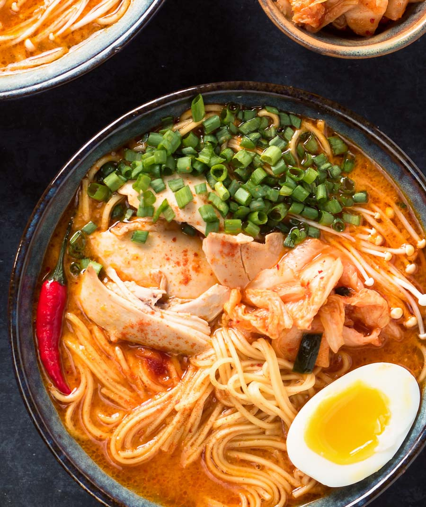

Yummy Noodles

One of my all time favorite dishes to have, easy to cook and such a delight to eat. Me and my Partner often eat korean food as its easy and full of flavour
Be sure to bring some water though as some dishes can be quite hot or a wee bit too salty requiring you to gulp up all the water in the house.
Ingredients Required
- 4 cups chicken stock
- 4 tsp gochujang
- 1 tsp doenjang (optional)
- 2 tsp shiro miso
- 1 tsp coarse gochugaru (not the fine powdered type)
- 1 tsp fish sauce
- 4 skinless chicken thighs
- 2 Large Eggs
- Green Onions
- Tofu
- Ramen Broth
- Ramen Noodles
Steps in Order to Make
- Bring the chicken stock to a simmer over medium low heat in a pot that is large enough to hold the stock, chicken and ultimately noodles.
- Poach the chicken thighs until they reach an internal temperature of 175F. Use an instant read thermometer. Always use an instant read thermometer. This should take about 25 minutes.
- Remove the chicken thighs. Set aside to cool enough to handle. Pull the chicken off the bones. You want bite size chunks. Reserve.
- Strain the stock if you are worried about little bits floating around in it. Not a big deal, though. Nothing wrong with little bits. Return the stock to the pot.
- Combine the gochujang, doenjang if using, miso and gochugaru in a small bowl. Add a bit of hot chicken stock to the bowl and stir to combine. You want to do it this way. If you just add the flavouring to the big pot you are going to be chasing bits of gochujang around the pot for an hour. Trust me.
- Add the gochujang stock mixture to the remaining stock in the pot. Stir in the fish sauce. Taste. Adjust salt if needed. Your broth is ready.
- In a medium saucepan, bring water to a boil. Boil large eggs for 6 minutes 30 seconds. If using extra large eggs boil them for 7 minutes 30 seconds. You may have to adjust your times slightly depending on the exact size of your eggs but this should get you pretty close.
- Submerge the eggs in really cold or ice water to chill. This stops the egg yolks from continuing to set up. Peel and set aside. They will warm up in the broth.
- Carefully cut the eggs in half lengthwise right before you serve. The yolk is still a bit runny so use a sharp knife.
- Bring the Korean ramen broth to a boil. Add the noodles and cook until done. Follow the instructions on the noodle package. Return the chicken to the broth to warm through. Slice the eggs lengthwise.
- Ladle the broth, noodles and chicken into a bowl. Top with the eggs, green onions, enoki mushrooms and kimchi. Serve a bit of extra gochugaru alongside for the serious chili-heads.
Return to Homepage